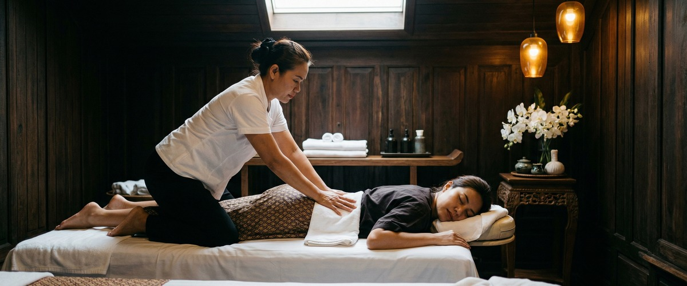
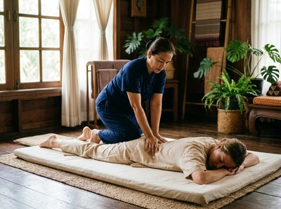
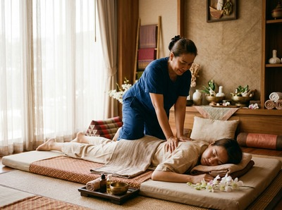

If your body feels stiff when you get out of bed, if reaching overhead has become an effort, or if your hips and lower back resist any movement that asks more than the bare minimum, reduced flexibility is affecting your daily life.

Thai massage uses assisted stretching and targeted pressure to restore your range of motion. It is one of the most effective hands-on treatments for helping your body move the way it was designed to.
Flexibility, as defined in anatomy, is the ability of muscles, soft tissues, and joints to move through their full, pain-free range. When that range shrinks, you get stiffness, restricted movement, and often chronic discomfort that gets worse if you ignore it.


There are several common causes. Sitting for long periods shortens hip flexors and tightens the lower back. Repetitive movements — from sport or manual work — create adhesions in the fascia, the connective tissue that wraps around every muscle group.
As we age, collagen slows down and muscle fibres lose their natural spring. After injury, fascia hardens and scars, reducing the give in the tissue around it. In each case, the result is the same: a body that pulls against you instead of working with you.
The NHS guidance on strength and flexibility is clear: better flexibility can improve posture, reduce aches and pains, and lower your risk of injury. Massage directly supports all three. It raises tissue temperature, breaks down fascial adhesions, reduces swelling, and improves blood flow.
The clinical evidence backs this up. A systematic review published in PMC found that massage therapy produced clear gains in shoulder range of motion. Further research on deep tissue massage found that clients who came in regularly over longer periods showed the greatest gains in flexibility.
One-off sessions help. Consistent treatment builds on itself.
Thai massage is well suited to this work. Unlike oil-based styles that focus on surface muscle layers, Thai massage uses assisted stretching and pressure along the body's sen lines. This lengthens muscles, frees up joints, and releases deep fascial tension in a way that works across the whole body.
Sports massage adds to this by targeting specific problem areas with deep friction work that breaks down adhesions in overworked tissue. You can book a session at Serendipity to start working on your flexibility directly.
At Serendipity on Hope Street in Glasgow city centre, every session targeting flexibility starts with a short consultation. Your therapist will find out where your movement is restricted and what it is stopping you from doing. They will then use techniques developed by head therapist Jariya Malone, drawing from the Thai massage tradition to guide your body through assisted stretches you could not reach on your own.
Depending on what you need, your therapist may combine Thai massage with sports massage to address specific areas of tension or fascial restriction. Hot stone massage is also available for clients with deep, chronic muscle tension that resists manual work alone.
The heat reaches a level that lets the surrounding tissue let go more fully. You can book your appointment online and note any specific areas of restriction when you arrive.
Office workers who sit for eight or more hours a day often develop shortened hip flexors, tight hamstrings, and upper back stiffness. It builds slowly and invisibly until movement becomes genuinely painful.
Runners, cyclists, and gym-goers who train hard but stretch little build up fascial tightness that slows progress and raises injury risk. People in their forties and beyond who notice their body becoming less responsive than it once was will also see real benefit.
Anyone recovering from a soft tissue injury where scarring has cut their range of motion will find that regular sessions at Serendipity deliver lasting improvement.
Both have value, but they work differently. Stretching maintains the range of motion you already have. Massage works on the tissue itself — breaking down adhesions, increasing elasticity, and improving blood flow to areas that have tightened up.
Clinical research shows that massage produces real gains in range of motion. This is especially true where adhesions, chronic tension, or post-injury scarring are involved. Self-stretching cannot reach those deeper causes.
Many clients feel an improvement in ease of movement after a single session. Lasting change takes a course of treatment. Research on deep tissue massage found that clients who came in regularly over one to two years showed the greatest gains.
Consistent treatment builds on itself. For most people, four to six sessions over a few weeks produces clear, sustained improvement.
Thai massage is particularly effective for whole-body flexibility. It uses assisted stretching that moves multiple joints and muscle groups together — including positions the body cannot reach on its own. Sports massage is better for targeting specific tight areas or localised fascial adhesions.
For many clients, a mix of both within a treatment plan gives the best results. Your therapist at Serendipity will advise based on where your restrictions are and what you want to achieve.
Yes. Tight hips, hamstrings, and a stiff upper back are common drivers of both lower back pain and poor posture. When shortened muscles pull the pelvis out of line or limit rotation in the upper spine, the back compensates and discomfort follows.
Restoring flexibility through massage tackles these imbalances at the source. The NHS notes that better flexibility can reduce aches and pains and support good posture — making it a practical, drug-free way to manage back discomfort.
Yes, and it is often most effective in these cases. After soft tissue injury, fascia hardens and scars. This limits the give in the surrounding muscle.
Techniques such as myofascial release and deep transverse friction work directly on scar tissue. They break down adhesions and help the tissue recover its normal suppleness. Always let your therapist know about the injury and when it happened so they can adapt their approach.
For clients whose stiffness comes from lifestyle factors — desk work or regular training — a monthly session is a practical starting point. Those with more significant restrictions, or who are in heavy training, often benefit from coming in every two weeks.
Your therapist at Serendipity can help you build a schedule that fits your goals and your routine. You can book regular appointments online and adjust how often you come in as your flexibility improves.